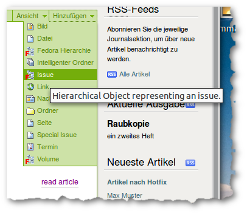

Jahrgänge, Ausgaben und Sonderausgaben dienen dazu, die Artikel hierarchisch einzuordnen. Im Gegensatz zu Artikeln, die über die Editorial Toolbox eingestellt werden, werden diese jedoch wie normale Ploneobjekte über das “Hinzufügen” Menu in der grünen Bearbeitungsleiste angelegt.

Hinzufügen von hierarchischen Elementen wie Ausgaben (Issue), Jahrgänge (Volume) oder Sonderausgaben (Special Issue)
Sektionen sind keine eigenständigem Objekte, sondern nur eine weiter Eigenschaft eines Artikels, die über die Metadaten ausgewählt wird.
Diese drei Typen unterscheiden sich prinzipiell nur durch ihre Standardansicht, die über das “Ansichten” Menu ausgewählt werden kann. FedoraHierarchien sollten nicht mehr verwendet werden und werden nur aus Gründen der Rückwärtskompatibilität weiterhin vom System unterstützt.
| Typ | Ansicht |
|---|---|
| Jahrgang (Volume) | Volume content |
| Ausgabe (Issue) | Issue content |
| FedoraHierarchie | Base View |
Diese Template listet nur die direkt im aktuellen Jahrgang angelegten Ausgaben an. Evtl. weiter vorkommende Jahrgänge, Ausgaben und Fedorahierachien werden ebenfalls gelistet, alles andere wird ignoriert. Wenn die untergeordneten Ausgaben Titelbilder haben, können diese eingeblendet werden, siehe volume_show_covers